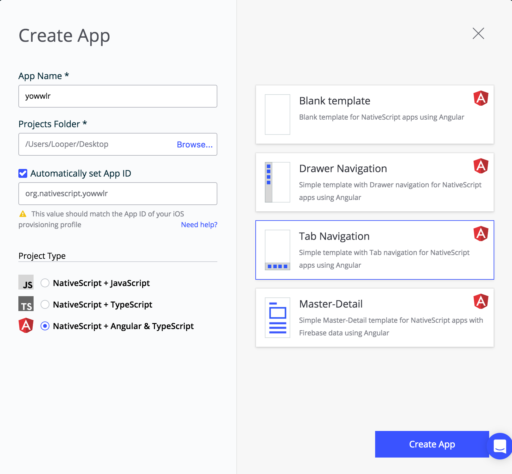
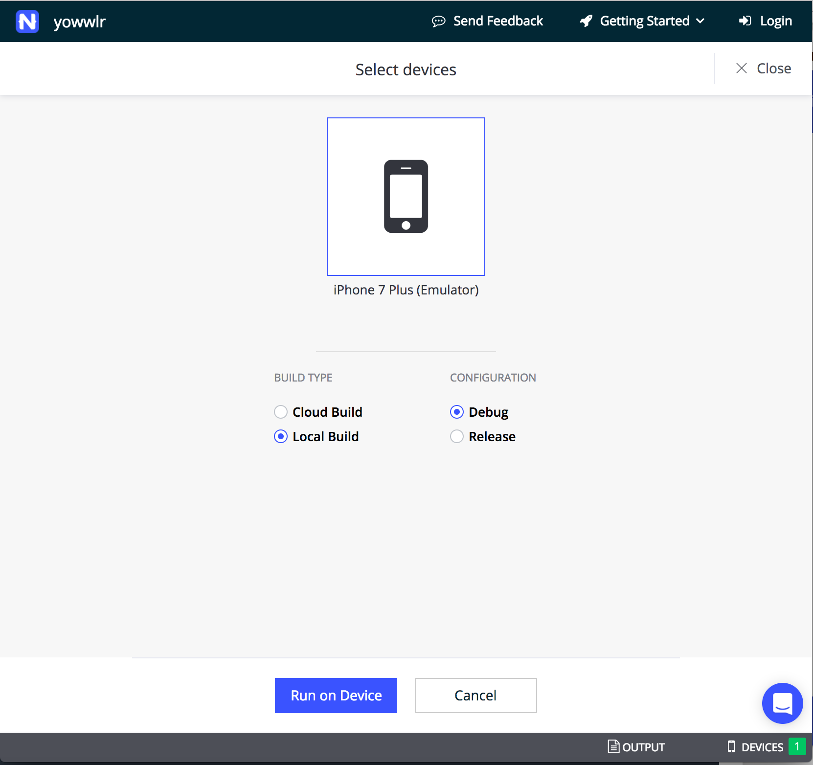
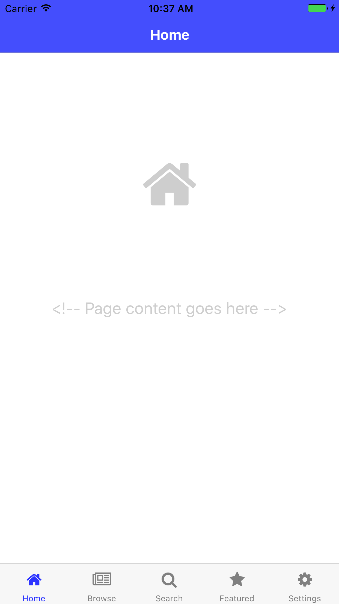
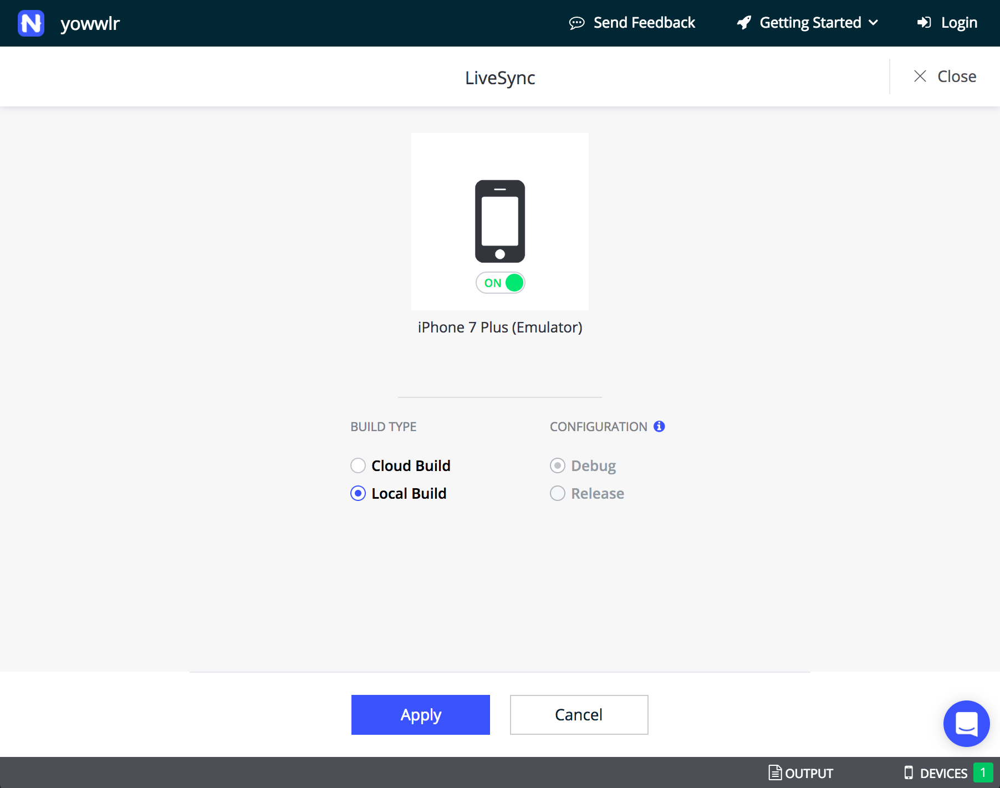

<!--
Copyright (c) 2016 Google Inc.

Licensed under the Apache License, Version 2.0 (the "License"); you may not
use this file except in compliance with the License. You may obtain a copy of
the License at

    http://www.apache.org/licenses/LICENSE-2.0

Unless required by applicable law or agreed to in writing, software
distributed under the License is distributed on an "AS IS" BASIS, WITHOUT
WARRANTIES OR CONDITIONS OF ANY KIND, either express or implied. See the
License for the specific language governing permissions and limitations under
the License.
-->
<link rel="import" href="../../step-style.html">
<link rel="import" href="../../syntax-style.html">

<dom-module id="step-2">
  <template>
    <style include="step-style"></style>
    <style include="syntax-style"></style>
    
    <p>To create our NativeScript app, we are going to leverage Sidekick, a tool that helps you quickly get up and running to
      build mobile apps. Get started by downloading Sidekick and completing all the installation steps listed <a href="https://www.nativescript.org/nativescript-sidekick">here</a>.
      Once everything is installed, let's scaffold a Tabbed navigation app to use, since we're making a clone of Twitter's
      tabbed interface.
    </p>

    <p>Open Sidekick and click the blue 'Create' button. You are prompted to create a new app. Name your new app Yowwlr and
      select 'NativeScript + Angular & TypeScript'. Select the 'Tab Navigation' button on the right. Click 'Create App'
      at the bottom and wait for your app to be scaffolded.</p>

    

    <p>What just happened? To see your app in a local emulator, make sure that an emulator is open, and then select <b>Run > Run on Device</b>.
      The emulator that you have open will be listed in the following screen so select it and then select 'Local Build' and
      'Run on Device'.</p>

    

    <p>If all went well, you should see the app on the local emulator.</p>

    

    <p>Congratulations, you have a tabbed application ready to go! Now, let's make your workflow even easier. Go back to your app's 'General' screen and select 'Livesync' at the top. With
      your emulator still open, toggle the switch for livesync to 'on' for 
      the emulator you are currently using. Now, when you make changes in your code, you will be able to see the emulator refresh automatically without having to rerun it manually.</p>

    

    <p>Now, with your emulation environment set up, you're ready to start development. Open the codebase that you scaffolded earlier in your favorite editor - we recommend Visual Studio Code.</p>
  


  </template>
  <script>
    Polymer({
      is: "step-2"    
});
  </script>
</dom-module>